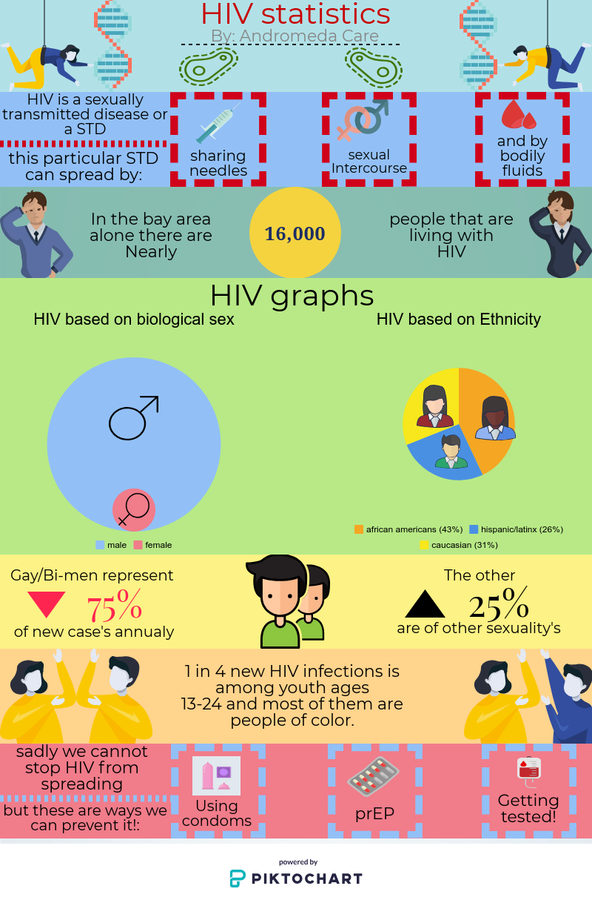

Here, you can learn the basic premise that is HIV/AIDS, and what Andromeda Care is doing in order to fight it.
HIV is a sexually transmitted infection and occurs by contact with or transfer of blood, pre-ejaculate, semen, and vaginal fluids. HIV, also known as human immunodeficiency virus, is a virus that attacks cells that help the body fight infection, making a person more vulnerable to other infections and diseases. HIV is transmitted when you have unprotected sex with someone who is HIV positive. HIV is a manageable chronic disease. It is treated with antiretroviral therapy (ART) which dramatically slows the infection and prolongs life. However, if you have HIV your immune system will become weak and eventually, you will die from your body not being able to fight off infections. While it breaks down your immune system, HIV also typically turns into AIDS which is a sign that your immune system is very damaged. AIDS is acquired immunodeficiency syndrome and it is a disease where there is a severe loss of the body's cellular immunity, greatly lowering the resistance to infection and malignancy.
Andromeda Care is ran by 5 young women of color, and was started to solve the rampant problem that is the concerning spread of HIV/AIDS in low income communities. We also want to solve the problem that is the the poor quality sexual education low income communities often get. We want to educate people and protect our community.
